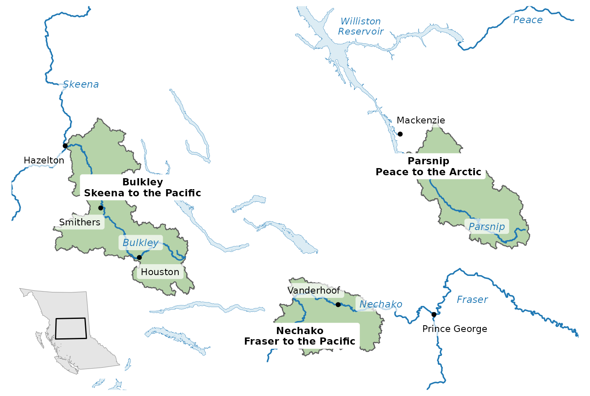
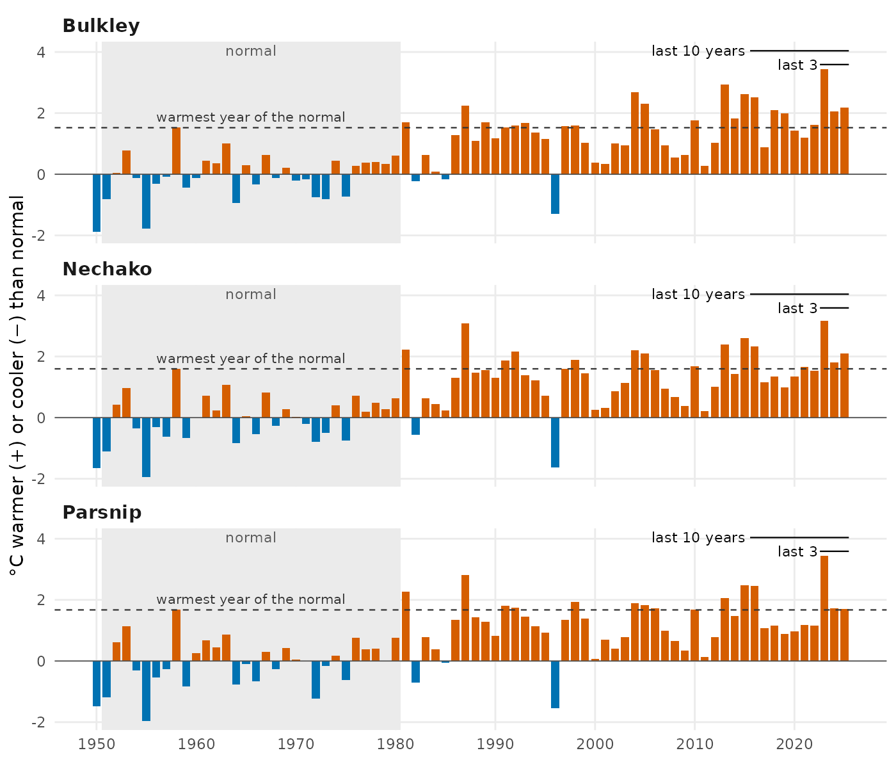
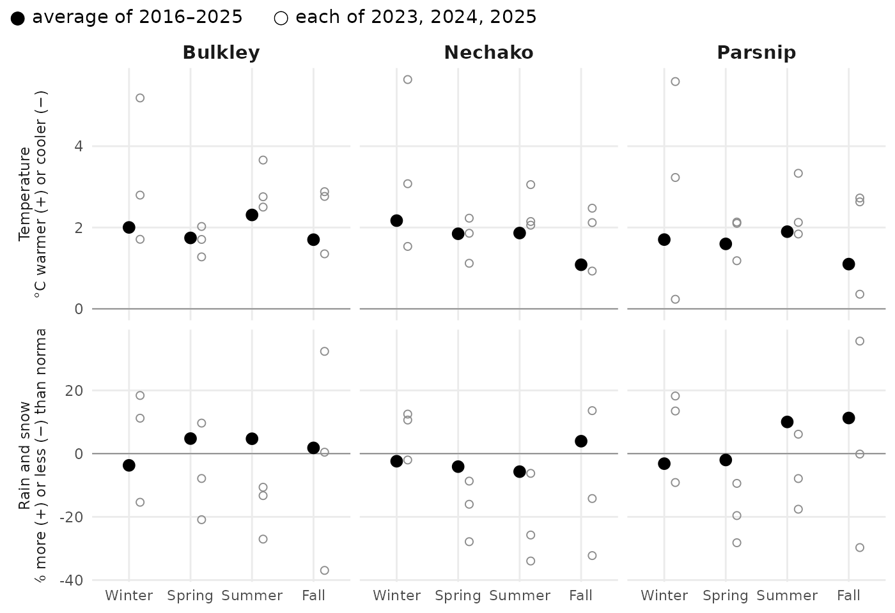
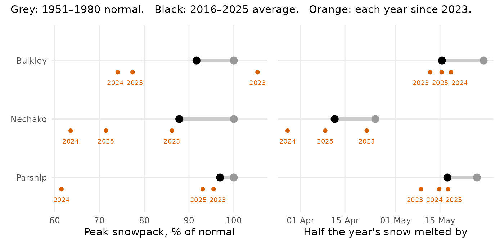
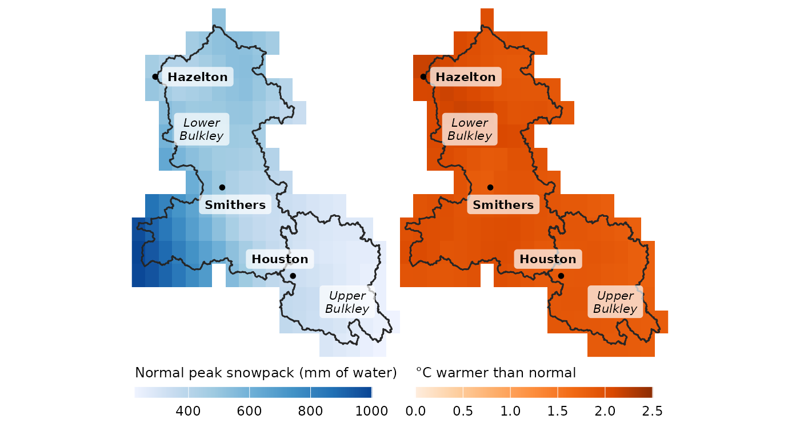

How the Weather Has Changed in Three Northern BC Watersheds
Source:vignettes/northern-bc.Rmd
northern-bc.RmdThree watersheds in northern British Columbia, each feeding a different great river: two run to the Pacific and one to the Arctic. This page compares the weather of the last ten years, and of the last three, with what was normal in 1951–1980. The short answer: all three are clearly warmer, they hold less snow, the snow melts sooner, and summers are thirstier. Total rain and snow changed by 5 % or less over ten years, and the last three years swung between dry and wet.
Ten years is long enough to start to show the climate. Three years is mostly weather, so the figures show each of the last three years on its own, not just their average.
Where these watersheds are

The Bulkley, Nechako and Parsnip watersheds feed three different river systems: the Skeena and the Fraser run to the Pacific, and the Peace runs to the Arctic. Rivers named on the map are the main stems; the inset shows the area within British Columbia.
At a glance
| Change from normal (last 10 yr / last 3 yr) | Bulkley | Nechako | Parsnip |
|---|---|---|---|
| Average temperature | +1.9 / +2.6 °C | +1.7 / +2.4 °C | +1.6 / +2.3 °C |
| Total precipitation | +1 / -4 % | -2 / -11 % | +5 / -3 % |
| Summer rain | +5 / -17 % | -6 / -22 % | +10 / -6 % |
| Peak snowpack | -8 / -14 % | -12 / -26 % | -3 / -17 % |
| Date half the snow has melted | 13 / 13 days earlier | 13 / 15 days earlier | 9 / 13 days earlier |
| Summer air dryness | +21 / +37 % | +16 / +27 % | +10 / +20 % |
| Summer soil moisture | -5 / -9 % | -3 / -9 % | -3 / -7 % |
It is warmer, almost every year

Almost every recent year is warmer than normal, and a year warmer than any in 1951–1980 is now common: 7 of the last 10 in the Bulkley, 5 in the Nechako and 4 in the Parsnip. Each bar is one year’s average temperature compared with the 1951–1980 normal (grey band). The dashed line marks the warmest year of that normal period.
Every season is warmer; the last three springs and summers were drier

Every season is warmer than normal, and in all three watersheds the last three springs and summers were drier and the winters wetter, on average and in at least two of the three years. Large dots: the 2016–2025 average. Small open circles: each of 2023, 2024, 2025. Winter is December, January and February of the same calendar year.
Less snow, gone sooner

Peak snowpack is smaller and the snow melts 9 to 13 days sooner, so the spring rise in streams comes earlier and less snow is left to feed them into summer. Left: the year’s peak snowpack as a percent of normal. Right: the date by which half of the year’s snowmelt had happened. Large black dot: the 2016–2025 average; grey: the 1951–1980 normal; small orange dots: each of 2023, 2024, 2025. No recent year fell below the smallest snowpack of the normal period.
The Bulkley from one end to the other

The upper Bulkley starts with far less snow than the lower Bulkley, but both warmed by about the same amount. Left: typical peak snowpack, 1951–1980. Right: how much warmer 2016–2025 was than that normal. Each square is one grid cell of the climate data, about 6.5 by 11 km. The line across the watershed at Houston divides the upper Bulkley (Neexdzii Kwa) from the lower.
The upper Bulkley gets 758 mm of rain and snow in a normal year, against 1055 mm below Houston, and its typical peak snowpack is only 55 % as deep. Over the last ten years it warmed by 1.9 °C and the lower Bulkley by 2.0 °C, and both lost about the same share of their peak snowpack (9 % and 8 %). Summer rain over the last three years fell further upstream (25 % less than normal, against 14 %). About the same warming and loss of snow, landing on a drier upper watershed.
What this means for watershed health
The changes above are the kind that studies elsewhere in western North America have tied to how streams run and how warm they get. The table names each source and the region it studied.
| What changed here | What it does to streams | Why fish care |
|---|---|---|
| Less snow, melting 9 to 13 days sooner | Snow-fed rivers across western North America now run one to four weeks earlier than in the 1950s to 1970s (Stewart et al. 2005). In the Fraser, a shrinking snowpack moved the spring high water about ten days earlier and lowered summer flows (Kang et al. 2016). | Lower summer flows in the Fraser come when salmon migrate upriver (Kang et al. 2016). |
| Warmer summers, drier air and soil | Warmer summers raise stream temperatures, and summer flows run lower and warmer (projections for Washington State) (Mantua et al. 2010). | Warm water can block salmon and steelhead migration and raise their risk of disease (Mantua et al. 2010). Across the United States, warming is projected to shrink the stream habitat cool enough for trout and other cold-water fish by about half (Eaton and Scheller 1996). |
Summer air dryness measures how strongly the air draws moisture from the land. Higher values dry soils and make plants close their pores to save water, which slows their growth; across the United States it rose from 1979 to 2013 (Ficklin and Novick 2017). The loss of spring snowpack is not only local weather either: in four large BC river basins, the Peace among them, the drop between 1961 and 2005 has been attributed to human-caused climate change (Najafi et al. 2017).
Next steps: from weather to water
Climate is the first half of the story. What streams actually do, how much water they carry and how warm it gets, is the second half. That work lives in the wet package, which turns records like these into streamflow and water temperature.
How this was made
The numbers come from ERA5-Land, a global reconstruction of past weather on a grid of about 6.5 by 11 km at this latitude, averaged over each watershed by the cd package. “Normal” is 1951–1980, the reference period NASA uses for global temperature, and close to the start of the record. Some warming had already happened by then, so these numbers understate the change since pre-industrial times. The last 10 years are 2016–2025 and the last 3 are 2023–2025. The two regional reports, FWCP Peace Region and Kootenay Lake, explain the method and its statistics in full; they compare 2015–2025, so their numbers differ slightly from these. To reproduce the Bulkley’s numbers:
library(cd)
aoi <- sf::st_read(system.file("extdata", "example_aoi_northern_bc.gpkg",
package = "cd"))
ts <- cd_extract(cd_catalog(), aoi[aoi$code == "BULK", ])
cd_compare(ts[ts$variable == "tmean", ], window_a = 2016:2025,
window_b = 1951:1980, test = NULL)
cd_compare(ts[ts$variable == "prcp", ], window_a = 2016:2025,
window_b = 1951:1980, method = "pct_change", test = NULL)